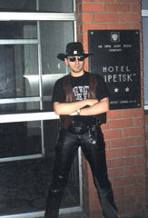
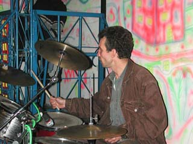

|
Действующий
состав
|
||
|
 |
 |
|
|
Борис
Редков
|
||
1.07.04 - с данного момента все новости, свежую афишу, новые картинки, музыки и прочее Вы можете найти по адресу blackmagic.spb.ru. Данный сайт больше обновляться не будет!
09.06.04 - Вчера в "Такси" в составе группы выступал гитарист Борис Редков, после чего на общем собрании трудового коллектива он был утверждён в качестве штатного гитариста. Просим любить (в рамках разумного) и жаловать (последнее - без ограничений!)
02.06.04 - Сегодня KeyMan, которому никогда в жизни ничего не доставалось на холяву (кроме коврика для мышки с изображением гитары Фендер Стратокастер) решил очередной раз испытать судьбу и принял участие в фотоконкурсе "Я люблю Shure". И выглядит он там вот так!
12.05.04 - С сегодняшнего дня в сети появился ресурс http://blackmagic.spb.ru
11.05.04 - Мы вернулись из отпуска, но похоже нас никто особо и не ждал. А какое замечательное шоу мы планировали сегодня в "Корсаре"! Может уже уехать обратно...
28.04.04 - Мы смертельно устали от всего этого бардака, посему уходим в отпуск. До 10 мая нас нет, с чем вас всех и поздравляем!
20.03.04 - Ну и главная новость месяца: а полного то состава у нас больше и нет. Eugene Павлов решил организовать собственный проект, поэтому времени на Black Magic у него уже не останется. Мы желаем ему успехов и будем с интересом следить за его творчеством. Ну а мы заявленные концерты не отменяем, так что всех их посетивших могут ждать самые неожиданные сюрпризы (а какие - мы и сами не знаем!)
17.03.04 - Есть две новости: хорошая и плохая. В апреле наконец то и в "Сундуке" мы - в полном составе, это хорошая. А плохая, что вы нас больше не увидите в "Корсаре" по воскресеньям. Только-только вы и мы стали привыкать к хоть какому то постоянству. Правда, мы там вроде как заявлены по пятницам ночью, но кто знает...
22.01.04 - ну а сегодня ночью, в 3:46:18 по московскому времени у нас заработала гостевая книга, в которую это письмо и будет торжественно помещено!
20.01.04 - сегодня ночью, в 3:41:33 по московскому времени нам пришло ПИСЬМО. Опубликовано с разрешения автора.
10.01.04 - в расписании постоянные изменения, будте внимательны...
7.01.04 - Наши концерты на этой неделе отменяются по болезни KeyMan'a.
6.01.04 - Поздравляем всех с Рождеством (это хорошая новость), а плохая новость, что временно недоступна часть музыки для скачивания, приносим свои извинения, через пару ночей восстановим!
31.12.03 - С Новым Годом!
8.11.03 - Вчера после многомесячного перерыва Black Magic прорезались в Корсаре все вместе (а не в различных джемовых составах). После этого нас попросили прорезаться там каждую пятницу At Midnight. Да будет так.
31.10.03 - на сайте появилась наша музыка в формате Real Audio. Так себе качество, зато качать быстрее.
26.10.03 - вести о роспуске Black Magic оказались слегка преждевременными. Да, у нас были всякие разные трудности, но мы есть и будем есть! (см. Афишку)
21.07.03 - загружена музыка!
2.06.03 - настало лето! Скоро - Пятница 13-е. Отметь её с нами в Jumping Jacke, мой Маленький Друг!
3.05.03 - вчера после мягко говоря удачного концерта в JH KeyMan & Eugene решили забежать по дороге домой в JJ на пол часика по любому - выпить по кружечке да послушать кого-нибудь. По дороге они как раз обсуждали: а что есть блюз Дельты?! По кружечке то выпили, а вот слушать пришлось опять BM, причём аж до 3х часов! Вот такой вот вышел праздник весны и труда!
19.04.03 - вниманию любителей клуба "Корсар"! Мы планируем там появиться уже в апреле. Смотрите афишу!
19.03.03 - уже прошло 7е ноября... А если точнее - 15 марта, день рождения KeyMan'a. Ну чтож, мы пережили этот день. Говорят, было весело. На сцене присутствовали гости: Юра Григорьев, Дима Чечетов со своим саксофонистом Игорем и Саша Мазуров с сопрано саксофоном. Под конец все (кроме Чечетова) изрядно нажрались. Такие дела!
6.03.03 - Дорогие девушки! Группа мужчин, играющих больше всех (в этом городе по крайней мере) песен про вас (в смысле девушек), поздравляет всех вас (в смысле девушек) с меджународным девушкиным днём. По этому поводу мы даже проснулись от зимней спячки и будем играть во всяких местах (см афишу)
9.01.03 - Дорогие друзья! Все, кто хотел прийти к нам 10-го в "Барометр", могут с чистой душой отправляться на ... Возможно, это мероприятие переносится на 17-е... Но таки что я вам могу обещать!
8.01.03 - Итак, объявляем BM самой везучей группой 2003 года. Вчера мы приехали в Дос, экстренно, на подмену, первый раз после 2хлетнего перерыва, очень хотели там понравиться... Но там прорвало ТРУБУ! Всем, кто приехал - наши извинения.
4.01.03 - Новый год, новые места, новые песни... В январе мы не работаем в "Пит-Стопе", зато работаем в "Барометре" и вновь открытом под названием "Jumpin' Jack" клубе на углу Гагаринской и Чайковской.
3.01.03 - Всех поздравляем с Новым Годом! Урраа!!! Краткий отчёт: Новый Год мы отметили по домам, а к 2-м часам собрались в "Трибунале", где до определённого момента играли весьма неплохо. До определённого момента. 1-го всем было так себе, однако отыграле в "Барометре" очень славненько! Жаль почти никто не слышал...
23.12.02 - Очередные добавления в расписании: Xmas BM будет справлять в Модном баре "Платинум", смотри афишку.
22.12.02 - Вчера в Трибунале BM первый раз в жизни играли с инструментом, которые женщины называют Сэксофон. Получили неимоверный кайф. Надеюсь и слушатели тоже.
16.12.02 Как всегда совершенно случайно BlackMagik после почти годичного перерыва появится в Барометре в ближайшую среду 18 декабря. 2002-го и приурочено это было ко дню рождения вашего покорного (в рамках разумного) слуги, а так же дню рождения некоего Егора Л, который в былые времена частенько проводил вечера в ФортРоссе. Былые времена - это когда там работала некая Ира Гончарова администратором и играли всякие там BM, YP... Теперь времена совсем другие, в ФортРоссе вааще никто не играет. А вот у Иры Гончаровой на днях случился день рождения. И по старой доброй семейной традиции она решила его отпраздновать в ближайшую среду в Барометре под музыку BM!
28.11.02 - завтра 29.11 нас не будет в Пит-Стопе в связи с охриплостью Вашего покорного Слуги. Sorry, все мы человеки!
16.11.02 - приносим свои извинения пришедшим вчера в Джазофрению - мы тоже туда приехали и уехали. Соответственно оставшаяся ночь в Ноябре тоже отменяется. Без комментариев!
8.11.02 - В связи с большевистскими праздниками 9.11 мы не играем в Пит-Стопе, ибо эта суббота - как воскресенье, посему ищите нас в Атлантиде (бардак!)
3.11.02 - вчера ночью мы стали первооткрывателями. Мы первооткрыли новое место, в котором играют Музыку. Это бар "Трибунал" (как это не пародоксально!). Первооткрыли и не собираемся закрывать - смотри афишку! Кстати, здесь мы играем с губной гармошкой!
28.10.02 - Внимание! Отмена нашего выступления в Неваде 31-го. Если бы я не позванил - скатались бы зазря! Вряд ли мы там будем когда-нибудь - мы не любим, когда нас динамят!
11.10.02 - И снова Внимание! Пришедших 13.10 в Хендрикс ожидает сюрпризец!
24.09.02 - Внимание! 26.09 мы по техническим причинам не будем в Jazz&Френии. Зато в этот самый день нас неожиданно для самих себя позвали в старый добрый "Корсар"!
20.09.02 - Стало известно, что в "Красном Лисе" играть мы не будем. И чего ради рэгтаймы разучивали?!
17.09.02 - Внимание! Нас не будет в "Красном Лисе" на этой неделе (смотри изменения в Афишке). А будем ли там дальше - тоже пока не известно....
15.09.02 - День рождения сайта, примерно совпадает с 3-х летием группы!